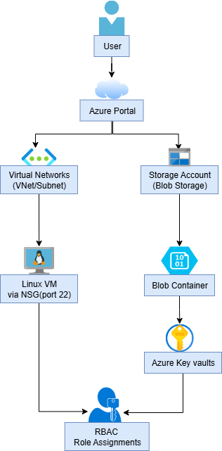

Project Overview
Deploy and secure a file upload system on Azure using Blob Storage, Key Vault, NSG, and RBAC. This project showcases real-world cloud infrastructure setup with a focus on secure access, documentation, and modular deployment.
Architecture Diagram
Tech Stack
- Azure CLI & Portal
- Azure Blob Storage
- Azure Key Vault
- NSG, VNet, IAM (RBAC)
- GitHub (Version Control)
Tasks Completed
- Created Resource Group
- Deployed Linux VM (Portal)
- Set up Virtual Network, Subnets, NSG
- Created Storage Account + Blob Container
- Uploaded and downloaded test files manually
- Created Key Vault and added secret
- Assigned RBAC roles (Reader/Contributor)
- Restricted blob access using IAM + Key Vault
Learnings
- Applied secure access control using Azure RBAC + Key Vault
- Understanding of VNet, NSG, and IAM role configurations
- Practical experience with Azure CLI + Portal workflows
Cleanup Command
az group delete --name resource-group-name --yes